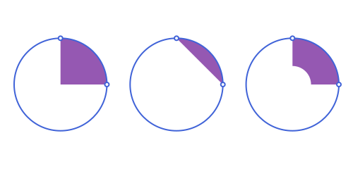
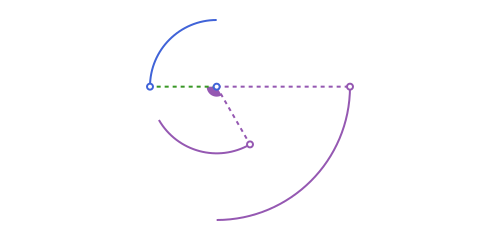
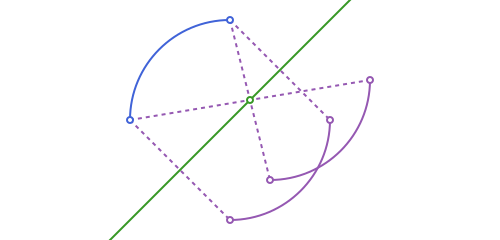
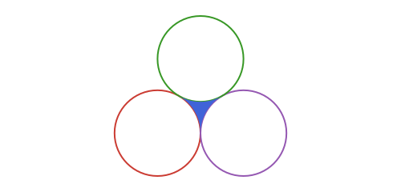
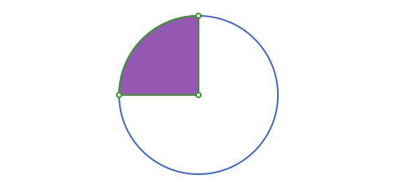
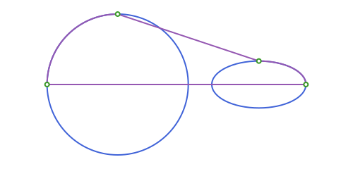
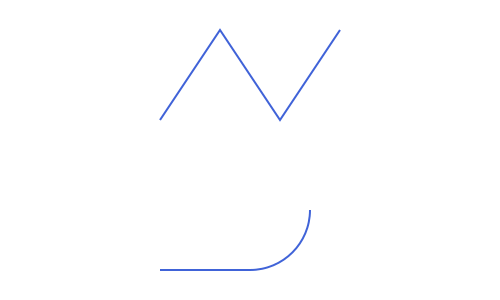
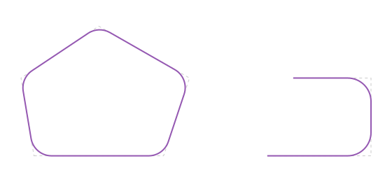

Circles: Sectors, Segments & Curvilinear Chains
The circle and arc from Circles: Arcs:
using Apollonius
c = APCircle2(APPoint(0.0, 0.0), 5.0)
p1, p2 = APPoint(8.0, 0.0), APPoint(0.0, 2.0)
arc = APCircularArc2(c, p1, p2)Circular sectors, segments and annuli
An arc alone is just a curve; closing it up gives a genuine region: a finite-area APPolygon whose sides mix straight segments with the arc itself. APCircularSector2, APCircularSegment2 and APAnnularSector2 are the three classical ways to do this (APCircularSector2(circle, p1, p2) is shorthand for APCircularSector2(APCircularArc2(circle, p1, p2)), and likewise for the other two. Each also takes the circle's raw center/r directly instead, e.g. APCircularSector2(center, r, p1, p2)):
APCircularSector2, the "pie slice": bounded by the two radiicircle.center -> p1,circle.center -> p2, and the arc between them.APCircularSegment2, the "cap": bounded by the arc and the straight chord[p1, p2]instead of the two radii.APAnnularSector2, the "ring slice": the region betweenarcand the corresponding arc of a smaller, concentric circle (r_inner), closed off by the two radial segments between them. This is Luxor's ownsector(center, innerradius, outerradius, ...)shape, represented here as a realAPPolygon.
sec = APCircularSector2(arc)
area(sec) # r² * measure(arc) / 2
perimeter(sec) # the two radii (2r) plus the arc length17.853981633974485seg = APCircularSegment2(arc)
area(seg) # r² * (measure(arc) - sin(measure(arc))) / 2
perimeter(seg) # the arc length plus the chord [p1, p2]14.925049445839958asec = APAnnularSector2(arc, 2.0) # inner radius 2.0
area(asec) # outer sector area minus inner sector area16.493361431346415
None of these three formulas is hand-derived per type. Every one comes for free from the generic, sides-based area/perimeter every APPolygon shares (see APPolygon's own docstring), and none needs to special-case whether arc sweeps less or more than half the circle (a "minor" vs "major" arc), since measure(arc) is already the specific directed angle for this arc.
Both APCircularSector2 and APCircularSegment2 have a Base.in matching their shape: inside the circle and on the correct side (angularly, for a sector; of the chord, for a segment):
c.center in sec, c.center in seg # the center is in the sector, but not this segment(true, false)Transforming arcs, sectors and segments
rotate, reflection and homothety all work on an APCircularArc2 (and, by delegating to it, on an APCircularSector2/APCircularSegment2/APAnnularSector2 too). rotate and homothety never reverse orientation (even homothety with a negative ratio, a point reflection through the center, is really just a 180° rotation), so p1/p2 transform pointwise with no surprises:
rotate(arc, 2pi / 3)
homothety(arc, -2.0) # negative k: still no swap neededAPCircularArc2(APCircle2([0.0, 0.0], 10.0), [-10.0, 0.0] -> [0.0, -10.0])
Reflecting about an APPoint is likewise a point reflection: no swap. Reflecting about an APLine, however, is a true mirror: it does reverse orientation, so reflection(::APCircularArc2, ::APLine) also swaps p1 and p2 internally, keeping the result's own p1 -> p2 sweep counterclockwise like every other APCircularArc2:
reflection(arc, APPoint(1.0, 1.0)) # point reflection: p1/p2 not swapped
reflection(arc, APLine(APPoint(0.0, 0.0), APPoint(1.0, 1.0))) # line reflection: p1/p2 swappedAPCircularArc2(APCircle2([0.0, 0.0], 5.0), [5.0, 0.0] -> [0.0, 5.0])
Without that swap, the reflected endpoints alone would trace out the arc's complementary 3/4-of-the-circle instead of its true mirror image.
The gap between three mutually tangent circles
Three circles that are pairwise tangent (each coin-touching-coin, or one containing the other two) leave a curvilinear-triangle gap between them. interstices finds it (or, when one circle encloses the other two, both gaps, one on each side):
u1 = APCircle2(APPoint(0.0, 0.0), 1.0)
u2 = APCircle2(APPoint(2.0, 0.0), 1.0)
u3 = APCircle2(APPoint(1.0, sqrt(3)), 1.0)
gap = only(interstices(u1, u2, u3))
area(gap), perimeter(gap)(0.1612544807739809, 3.141592653589793)
The result is an APInterstice2: a specific 3-arc APPolygon built by finding the circle(s) tangent to all three (the classical CCC Apollonius problem, see Tangency & Apollonius Problems) and picking out the facing arc on each of u1/u2/u3.
gap isa APInterstice2trueGeneral curvilinear polygons
APCurvilinearTriangle2, APCurvilinearQuadrilateral2 and APCurvilinearNgon2 generalize APInterstice2 beyond "3 arcs from mutually tangent circles": each is a closed region bounded by any mix of straight (APSegment) and curved (APCircularArc2, APEllipticArc2, APParabolicArc2, APHyperbolicArc2) sides, built directly from those sides rather than derived from circles:
| Type | Number of sides |
|---|---|
APCurvilinearTriangle2 | 3 |
APCurvilinearQuadrilateral2 | 4 |
APCurvilinearNgon2 | any number ≥ 3, given as a vector |
circ = APCircle2(APPoint(0.0, 0.0), 3.0)
arc = APCircularArc2(circ, APPoint(0.0, 3.0), APPoint(-3.0, 0.0))
rad1 = APSegment(APPoint(0.0, 3.0), APPoint(0.0, 0.0))
rad2 = APSegment(APPoint(0.0, 0.0), APPoint(-3.0, 0.0))
ct = APCurvilinearTriangle2(rad1, arc, rad2) # one curved side, two straight
area(ct), perimeter(ct)(7.0685834705770345, 10.71238898038469)
This is exactly what APCircularSector2 computes for the same three sides. Building it directly like this is only necessary when the sides don't come from a common circle/ellipse/etc. in the first place (e.g. after inverting or affine-mapping a region whose sides were originally circular, see Affine Maps and Inversion, polar lines and poles):
eq = APEllipse2(APPoint(6.0, 0.0), 2.0, 1.0, 0.0)
earc = APEllipticArc2(eq, APPoint(8.0, 0.0), APPoint(6.0, 1.0))
s1 = APSegment(APPoint(0.0, 3.0), APPoint(6.0, 1.0))
s2 = APSegment(APPoint(-3.0, 0.0), earc.p1)
cq = APCurvilinearQuadrilateral2(earc, s1, arc, s2)
area(cq) > 0 # a genuine 4-sided mixed straight/circular/elliptic regiontrue
APCurvilinearNgon2(sides) is the same idea for any number of sides ≥ 3, given as a plain vector instead of one positional argument per side, useful when the side count isn't fixed ahead of time:
cn = APCurvilinearNgon2([rad1, arc, rad2]) # the same 3 sides as ct above
cn == APCurvilinearNgon2(rad1, arc, rad2) # one side per argument also works, same as the vector form
area(cn) ≈ area(ct), perimeter(cn) ≈ perimeter(ct) # same sides, same region either way(true, true)rotate, reflection, homothety and translate all transform every side independently and reassemble the result, the same generic, sides-based machinery every APPolygon shares (see APCurvilinearNgon2's own worked example above, via invert, for the n-sided case built from an arbitrary vector of sides).
Open chains: APPolyline2 and APCurvilinearPolyline2
APPolyline2 is APSegment generalized to any number of points: an open chain through a list of vertices, joined by straight sides. It's the open counterpart of APStraightNgon (which always closes back to its first vertex; this never does), so it's an APCurve, not an APPolygon, so it has no area and no interior:
zigzag = APPolyline2(APPoint(0.0, 0.0), APPoint(2.0, 3.0), APPoint(4.0, 0.0), APPoint(6.0, 3.0))
length(zigzag), arc_length(zigzag)(4, 10.816653826391967)APCurvilinearPolyline2 is the curved-sided counterpart, built from a plain vector of sides the same way APCurvilinearNgon2 is, except it stays open (the last side doesn't have to close back to the first) and its sides are taken in the order given rather than auto-reordered: each side's own endpoint must match the next side's own start, or the constructor throws:
open_chain = APCurvilinearPolyline2([reverse(rad1), arc]) # a straight side into a curved one
arc_length(open_chain) ≈ distance(rad1[1], rad1[2]) + arc_length(arc)trueBoth support the usual rotate/homothety/reflection/translate quartet (each vertex or side transformed independently and reassembled), reverse (runs the chain back to front), p in pl/ distance(p, pl) (nearest-side membership/distance, not "inside a region" the way APPolygon's in works), and indexing/length/ iteration the same as APSegment/APLine:
reverse(zigzag)[1] == vertices(zigzag)[end]true
Rounding a corner
An APCurvilinearPolyline2 chains segments and arcs end to end. A classic use is rounding the corner of a polyline: the two sides that meet at a corner are cut short, and a circular arc of a given radius, tangent to both, joins the cuts. The center of that arc is on the bisector of the corner, at the distance from the corner where the circle just touches the two sides.
fillet(a, v, b, r) finds that arc: it returns a NamedTuple with the arc that faces the corner, its center and the two points of contact t1 and t2. The arc runs counterclockwise, so its endpoints are t1 and t2 when the corner turns left and t2 and t1 when it turns right.
fa, fv, fb = APPoint(0.0, 0.0), APPoint(6.0, 0.0), APPoint(4.0, 5.0)
fr = 1.0
ff = fillet(fa, fv, fb, fr)
distance(ff.center, APLine(fv, fa)) ≈ fr ≈ distance(ff.center, APLine(fv, fb))trueround_corners(shape, r) rounds every corner of a convex polygon, giving an APCurvilinearNgon2, or every interior corner of a polyline, giving an APCurvilinearPolyline2. All the interior corners of a polyline must turn the same way. When they turn right, the chain is traversed from the end, so that they turn left, which is the direction an arc runs.
sq_rc = APStraightNgon([APPoint(0.0, 0.0), APPoint(4.0, 0.0), APPoint(4.0, 4.0), APPoint(0.0, 4.0)])
rc_sq = round_corners(sq_rc, 1.0)
length(sides(rc_sq)), area(rc_sq)(8, 15.141592653589793)